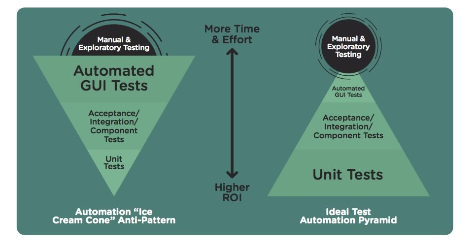

Talk ~30 mins
Demo ~15 mins
Q&A ~15 mins
Who is this talk for?
Anyone who writes any kind of code for any reason.
Minimal Background Knowledge
What is Test Driven Development?
Why?
History
Implications
Experience
What is a software test?
Some check that can either:
The test is also code.
def test_plus():
assert 1 + 1 == 2
Functional Tests
A.K.A.
End-to-end Tests
Acceptance Tests
Black Box Tests
Functional Tests
Functional Tests
Test the functionality of a system
Treat implementation as a Black-Box
Do not reference or see the source code
Can be written in any programming language
Can be packaged and run separately
Unit Tests
Test an individual unit or piece of code
Focus on a specific function or class
Require access to the source code
Written in the same language as code under test
Unit Tests
(Pure)Unit Tests
Integrated (Unit) Tests
Unit Tests
Strictly test one function or class
Integrated Tests
Test collaborating pieces of code
Both require access to code
What is Test Driven Development?
It is development that is driven by tests!
just kidding!
RED - GREEN - REFACTOR
A.K.A.
Inside Out
Bottom Up
Classic
Starts at Unit test level
Build from components / classes upwards
Developer focuses on one thing at a time
A.K.A.
Outside In
Top Down
Mockist
Starts at Functional test level
Works inward to Unit test level
Can use Mocks for components not-yet-implemented
Implementation of class/components left to last moment
At least two tests for every feature!
But what if you don't know what you're doing?
Do a little code experiment on the side.
Throw it away.
Now do it again with TDD.
“plan to throw one away; you will, anyhow.” Frederick Brooks Jr.
What it's not:
Why?
Value
Why?
From hardly ever done ...
... to standard practice.
Where did TDD come from?
Idea of small iterations
Idea of writing test before code
Implications
You will write different code.
Always thinking How would I test that?
Leads to objectively better code
Implications
Need debuggers less.
Not writing tests feels weird.
Mindset change
If the code will only ever be run ...
... not in production,
... just by you,
... today.
Then mabye consider skipping writing tests.
Experience
How to do it well?
Start with English
Then test
Then code
How to do it well?
The hardest aspect of programming is naming things.
Clarity about the purpose of the test.
“ I'm just a soul whose intentions are good
Oh Lord, please don't let me be misunderstood”
xUnit
Continuous Integration
Run tests locally.
Commit
Run tests in CI.
Test Double - Wiki